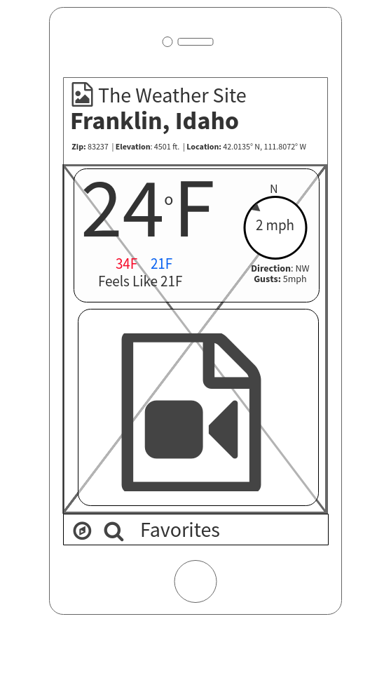
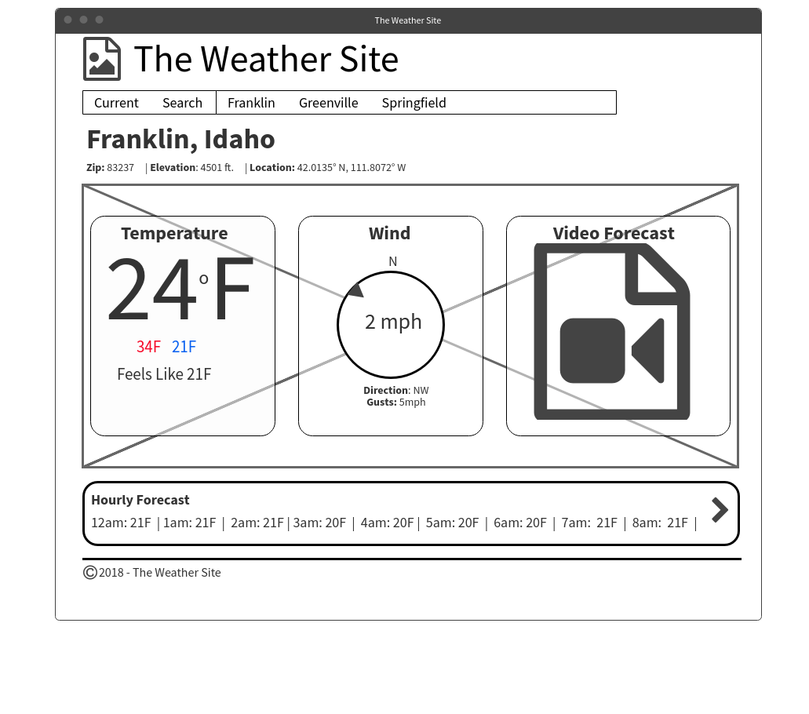

Weather Site Plan
Purpose
The purpose of The Weather Site is to give current weather conditions in 3 different ways. The initial page will give the weather for the current location based on the Geocoding location information from the device. The second is weather for 3 specific locations accessible through a dedicated link, and the third is weather for any location determined by a search string.
Audience
Primary audience is adults ages 18-30. Most will be students. Access to the site will be split between mobile devices and laptops. A secondary audience will be anyone interested in weather.
Audience Goals
College students move around quite a bit so one goal would be to quickly get the weather conditions for their current location as they head off to class or study. They are also often far from their homes so the ability to quickly get the conditions for a specific location is important as well. The third goal deals with planning for travels...the ability to get weather conditions for any location will help with last minute packing for road trips.
Persona

- Name: Joe Cool
- Occupation: student
- Age: Eternally 18
- Interests: Traveling, Flying, Play acting, Eating
- Motivation: Joe is not into planning. His last minute scrambling, whether it is getting to class in the morning or heading out on his latest adventure, has left him unprepared for weather conditions many times (He is tired of sleeping in the rain and snow). He would like to be more prepared...without having to put much effort into it...or planning.
- Environment: Joe is comfortable using laptops and Mobile devices, he will most often be found on a smart phone however. Many of the places he frequents do not have great signal…he is often dealing with 3G speeds
Typography
Heading Font

Body Copy Font

Colors
| Primary | Secondary | Accent1 | Accent2 |
|---|---|---|---|
| #0e89d5 | #FFF | #6c4ddb | #d8f |

Opaque rounded content box

Wireframes
Small Screen
Large Screen
